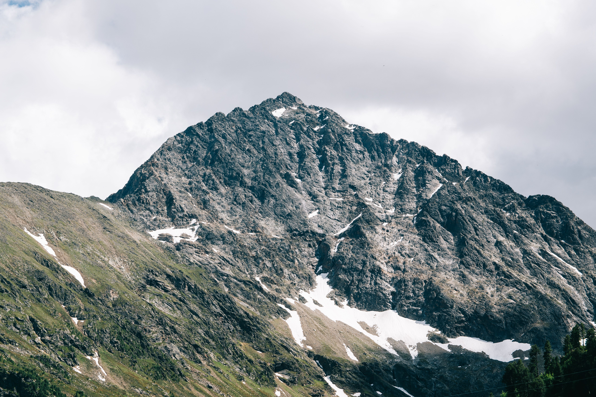
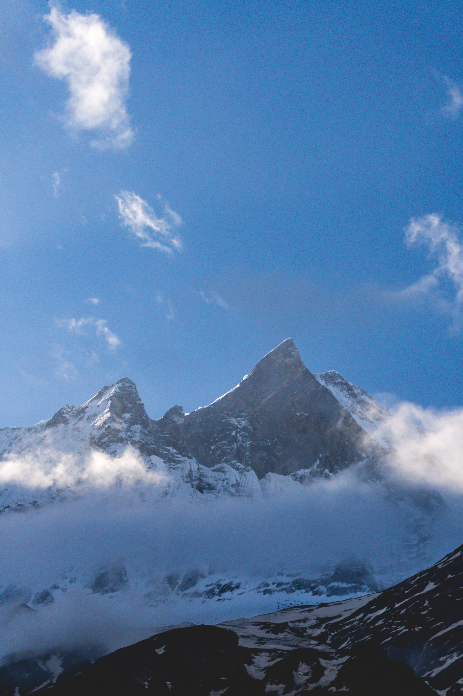
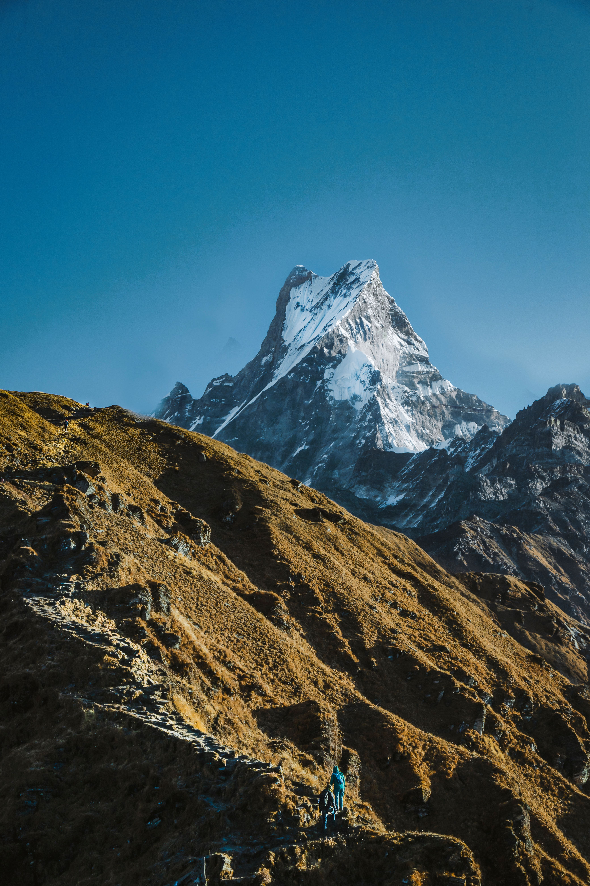
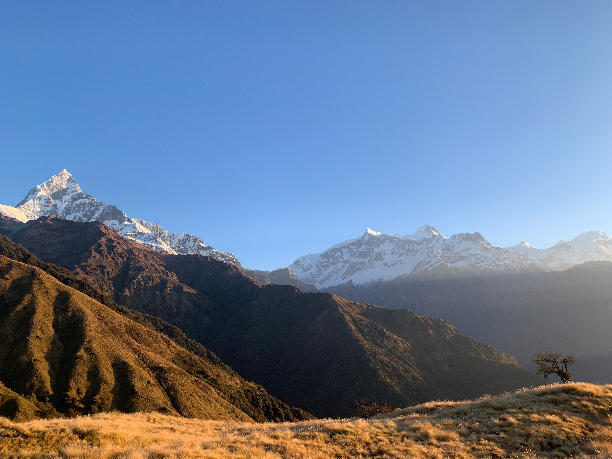
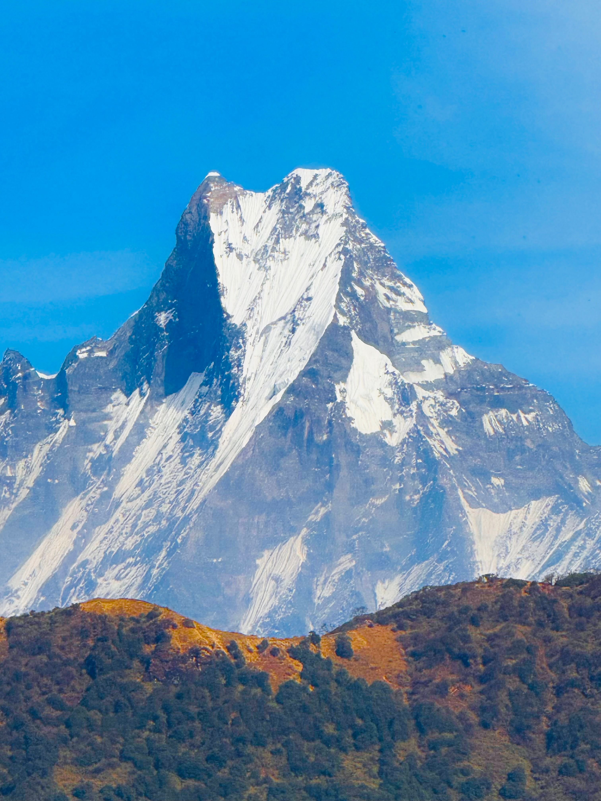

Clouds drift across a jagged,
snow-covered ridge.

A steep white summit rises behind a
hillside lit gold by the sun.

Sunlight reaches the grassy slopes while
the valley below stays in shadow.

Snow traces the steep face of a peak above
autumn-colored trees.
This collection looks at how light and weather change the way mountains appear. Clouds hide parts of a ridge, sunlight picks out a hillside, and snow brings the shape of a summit into focus.
— Above the Clouds